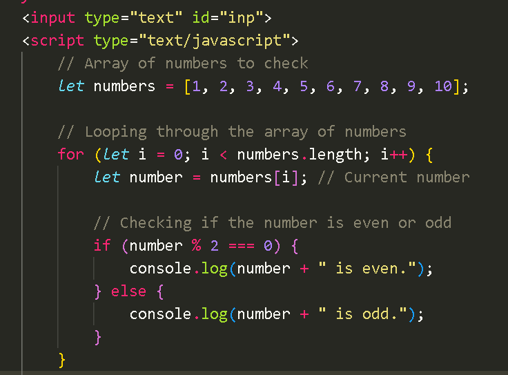
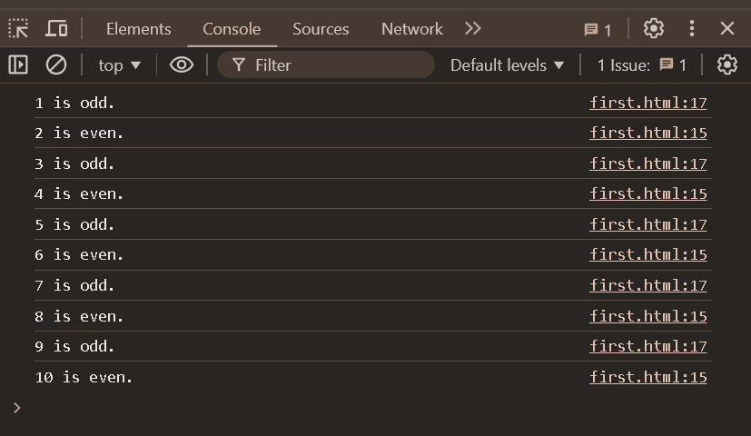

Understanding JavaScript Loops
Introduction
- Loops are an essential part of programming that allow you to repeat code without having to write it
multiple times. In JavaScript, there are several types of loops, each serving different use cases.
For Loop
- The for loop is commonly used when you know the number of iterations in advance. It consists of three
parts: initialization, condition, and increment.
for (let i = 0; i < 5; i++) {
console.log(i);
}
This loop will print numbers from 0 to 4.
While Loop
- The while loop repeats as long as the specified condition is true. Be careful, though—if the condition
never becomes false, you'll create an infinite loop!
let i = 0;
while (i < 5) {
console.log(i);
i++;
}
This loop will also print numbers from 0 to 4.
Do-While Loop
- The do-while loop is similar to the while loop, but it guarantees that the code inside the loop will run at least once.
let i = 0;
do {
console.log(i);
i++;
} while (i < 5);
This loop will print numbers from 0 to 4 as well.
Example

This is an example of loops.
This is the output of the code.